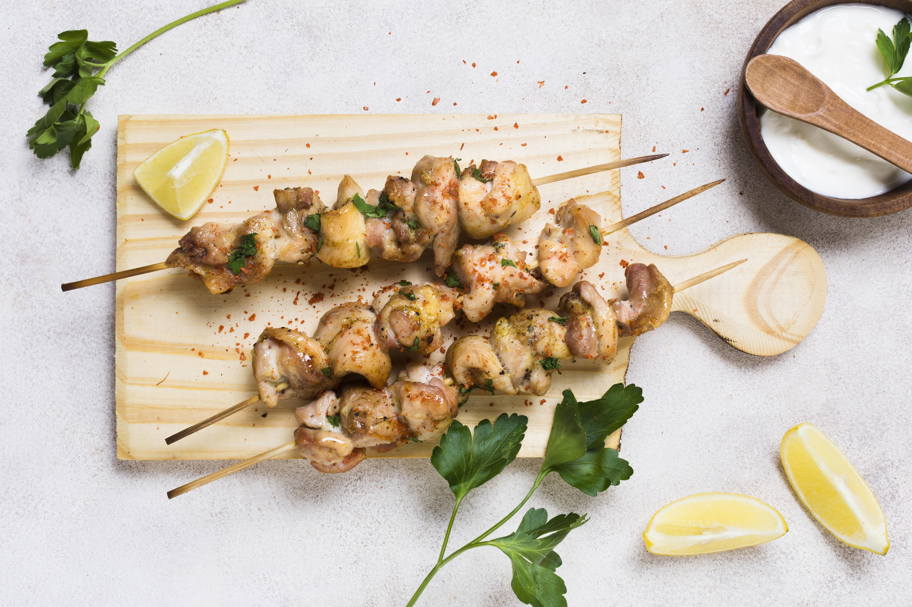

Grilled Lemon-Herb Chicken Skewers
Ingredients:
- 4 boneless, skinless chicken breasts, cut into 1-inch cubes
- 2 lemons, juiced and zested
- ¼ cup olive oil
- 2 cloves garlic, minced
- 1 tbsp fresh oregano, chopped
- 1 tbsp fresh thyme, chopped
- Salt and pepper to taste
- Wooden skewers (soaked in water for 30 minutes)
Instructions:
- In a bowl, whisk together lemon juice, lemon zest, olive oil, garlic, oregano, thyme, salt, and pepper.
- Add chicken cubes to the marinade and toss to coat. Cover and marinate in the refrigerator for 1-2 hours.
- Thread chicken onto soaked skewers.
- Preheat grill to medium heat and oil the grates.
- Grill skewers for 5-7 minutes on each side until the chicken is cooked through and has nice grill marks.
- Remove from grill and let rest for a few minutes before serving.
